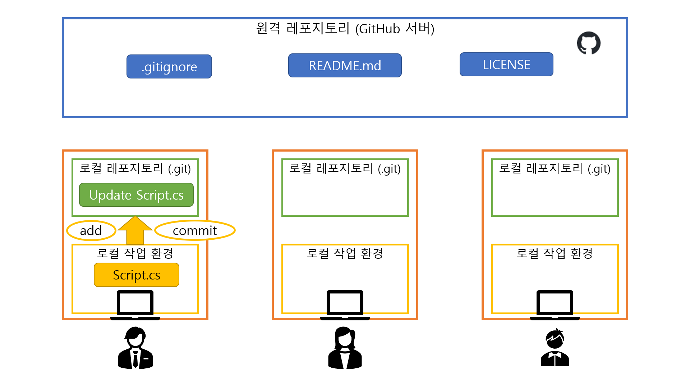

로컬 변경 사항을 저장하기
Git은 변경사항을 자동으로 추적하지 못한다. 따라서 어느 파일이 어떻게 바뀌었는지 Git에게 알려주는 작업이 필요하다.

- 브랜치가 내가 작업할 브랜치인지 확인
- 처음 프로젝트를 시작하면 기본 브랜치가
main으로 설정되어 있다. - 혼자 작업할 때에는 아무 브랜치에서 작업해도 상관 없지만, 공동으로 작업할 때에는 개인별로 하나씩의 브랜치를 파서 각자의 브랜치에서 작업한 후에
main으로의 풀 리퀘스트를 날리는 것이 권장된다. - 브랜치를 변경하거나 새로 파야 하는 경우 브랜치 변경하기의 명령어를 입력한다.
- 처음 프로젝트를 시작하면 기본 브랜치가
- 로컬 작업 환경에서 파일 변경
git status- 어떤 파일이 변경되었는지 확인한다.
git add .- 로컬 작업 환경에서 변경된 모든 파일을 Git이 추적하게 해준다.
- 모든 파일이 아닌 특정 파일만 Git이 추적하게 하려면,
.대신 해당 파일의 경로를 입력하면 된다.- 예:
git add ./Repository/Assets/Scripts/Player/Player.cs
- 예:
git commit -m "[커밋 메시지]"- Git이 추적하고 있는 변경사항을 현재 브랜치에 커밋하여 반영한다.
- 커밋 메시지는 남들이 메시지만 봐도 무엇이 바뀌었는지 쉽게 알 수 있도록 친절하게, 요약하여 작성한다.
- 좋은 예:
git commit -m "Add some sprites and fix scroll bug" - 나쁜 예:
git commit -m "minor"
- 좋은 예:
- 커밋 메시지를 한글로 작성하는 것도 가능하다.
- 한번 커밋하면 되돌리기 어렵다. 신중히 입력하자.
- 지난 커밋을 조작하는 방법이 있기는 하지만, 여기서 다루지는 않겠다.
- 잘못된 커밋을
git push하면 정말 큰일난다. 이때는 조작하기도 어렵다.
- 계정 아이덴티티 설정이 되어 있지 않다면 커밋 시 아래 사진과 같은 문구가 뜨면서 커밋이 되지 않을 수 있다.

- 이 경우 계정 아이덴티티 설정을 수행한 후에 다시 시도하자.
- 로컬 변경 사항을 원격 저장소에 푸시하기의 명령어 입력